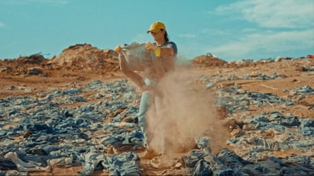
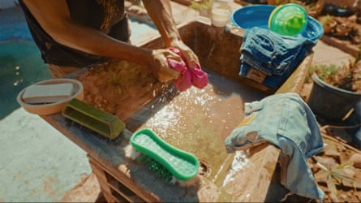
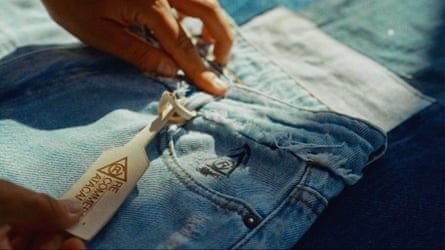
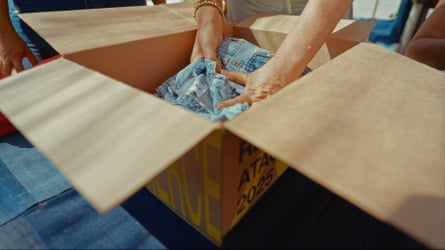

E very week, Bastián Barria ventures into the Atacama desert in northern Chile looking for items of discarded clothing in the sand. About half of the hundreds of garments he finds are in perfect condition. He collects what he can and adds them to the two-tonne pile of clothes he has stored at a friend’s house.
On 17 March, 300 of those items, including Nike and Adidas shorts, Calvin Klein jeans and a leather skirt, were listed for sale online for the first time. The price? Zero. Customers had only to pay shipping costs. The first batch sold out in five hours, bought by customers from countries including Brazil, China, France, the US and the UK.
Re-commerce Atacama is part of a campaign to raise awareness of the mountains of discarded clothes in Chile and of textile waste globally. It was set up after a fashion show staged in the desert last year, where models walked a catwalk of sand wearing outfits made out of the surrounding waste.
“We want people to feel involved and be agents of change – not from a passive position of seeing content, but by purchasing something, showing people and telling our story of what is happening here in the desert,” says Barria, 32, a civil engineer and co-founder of Desierto Vestido (Dressed Desert), an organisation dedicated to raising awareness of textile waste.
“At first, there was a certain disbelief on my part to see this happening. I asked myself why garments in perfect condition were being discarded in the desert when there are many people who might like to wear them. It’s sad. It really makes you feel powerless.”
Chile has long been a destination for secondhand and unsold clothing, most of it made in China or Bangladesh and passing through Europe, Asia or the US before arriving in the country. In 2022, more than 131,000 tonnes of clothing arrived in the country, most of it in the city of Iquique in northern Chile, home to one of the most important duty-free ports in South America.
Chile’s Atacama desert is being polluted by huge waste from the global fast-fashion industry
Some is resold, but sources in the region say up to 70% ends up in rubbish dumps in the desert every year; in Chile it is forbidden to dump textile waste in legal landfills because it generates soil instability. The desert is one of the country’s most popular tourism destinations, known for its otherworldly landscapes, but for those living near the dump sites it has become a place of devastation. Pictures of a mountain of clothes taken from space went viral in 2023. In recent years, people have resorted to burning the waste in an attempt to hide the extent of it. The resulting toxic clouds of smoke are an environmental and health concern for the surrounding communities.
Determined to do something about the crisis, Barria’s organisation teamed up with fashion activists Fashion Revolution Brazil, the Brazilian advertising agency Artplan and the e-commerce platform Vtex, to tell the world about the situation.
The Re-commerce Atacama operation involves a careful process of selecting and restoring the garments to ensure they are in good condition for resale. They are cleaned and made available for free, bar shipping costs, on the digital platform.
Clothes recovered from the Atacama desert are cleaned and sanitised ready to be put on the Re-commerce Atacama site
In advance of the first drop of clothes, influencers and personalities including Dudu Bertholini, a judge on Drag Race Brasil , posted about the campaign on social media. The next drop is expected in April. Anyone interested can add their email to be notified when more clothes become available.
Fernanda Simon, director of Fashion Revolution Brazil, sees the project as “an act of activism that reveals what is behind fashion and proves we can do things differently”.
She says: “More than removing clothes from the desert, we wanted to inspire solutions, rethink the fashion model and show that we must talk about circularity.”
About 92m tonnes of textile waste are created annually and every second, the equivalent of a lorry load of clothes ends up on a landfill site somewhere around the world.
Clothes discarded in perfect condition are given away, with customers paying only the cost of shipping
This phenomenon is a consequence of an increase in clothing consumption and the fast-paced production model of the fashion industry, says Simon. “How we produce fashion is wrong,” she says. “We produce more and more and the velocity of production is getting faster and faster. There is no transparency about how these clothes are made.”
While 20 years ago, most labels would release four collections of clothes annually, she says, now with the rise of fast fashion and ultra-fast fashion, there can be as many as 52 collections a year.
Unsold inventory and unwanted secondhand clothes, most of which come from markets in the US, Europe and Asia, are dumped in countries in the global south. Another place where this problem is particularly visible is Accra, Ghana’s capital, where tangled webs of clothes line the shore .
The next drop of clothes is planned for April, after the first one in March sold out in five hours
Simon labels this practice “racist and colonialist”. Most of the raw materials required to make clothes come from countries in the global south, she says. European countries and the US are the biggest consumers, and when they don’t want the clothes, they end up back in countries in the global south.
“It’s a massive problem. It’s not just Chile, it’s not just Ghana. It’s a global problem. We are facing this waste and it is proof that we need to rethink the fashion system.”